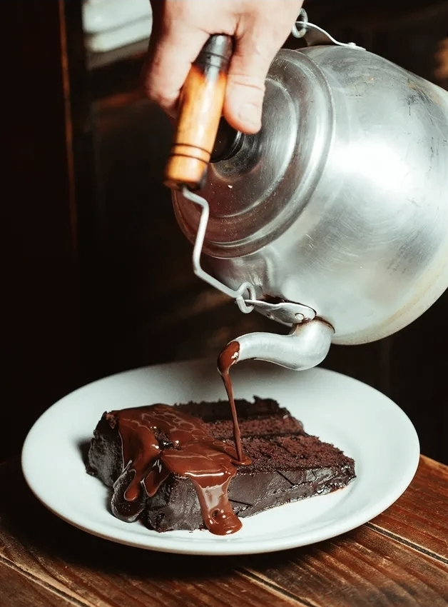
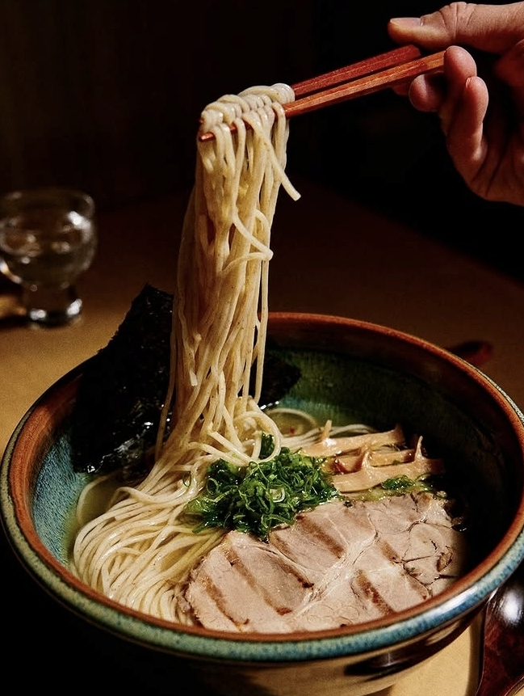
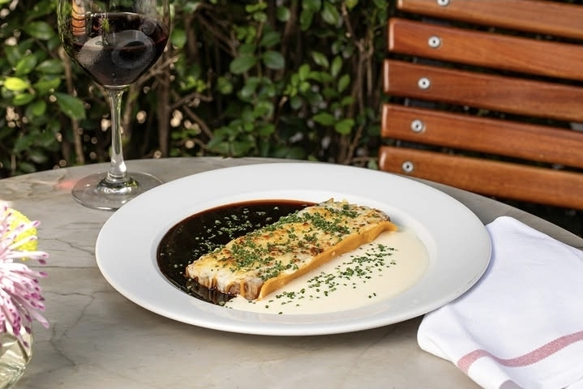
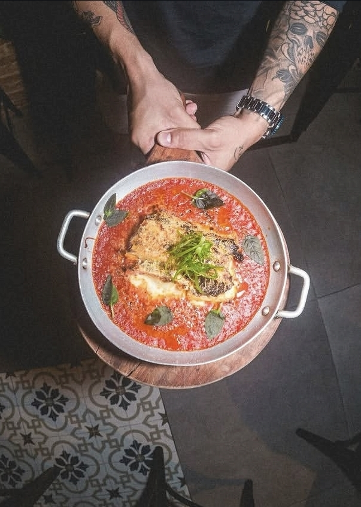

Com a temperatura caindo, nada como um prato quente, um caldo reconfortante ou uma massa bem servida pra esquentar o fim de semana. Separamos 5 endereços em São Paulo que são certeiros pra esses dias mais frios.
1. Brodo Ristoranti
Itaim Bibi
Desde 2013 no Itaim Bibi, o Brodo é comandado pela chef Mariana Valentini, que escolheu o nome pensando exatamente nisso: brodo significa caldo em italiano, "a alma da comida". A casa serve massas orgânicas feitas à mão, com decoração retrô e 80 lugares — o tipo de lugar que pede uma taça de vinho tinto e um prato de massa bem quente.
Endereço: Rua Comendador Miguel Calfat, 295 — Itaim Bibi
@brodoristoranti2. Sertó
República

Bar e restaurante na região central, na Rua Major Sertório, com cardápio assinado pelo chef Marcelo Magaldi. A casa é queridinha das redes por unir petiscos bem executados a drinks autorais e clássicos — ambiente aconchegante, prato bem servido, clima de bar de bairro com padrão elevado. O bolo Misericórdia, servido com chocolate quente derramado na hora, é apontado como imperdível.
Endereço: Rua Major Sertório, 106 — República
@serto.sp3. Jojo Ramen
4 unidades em SP

Fundado em 2016 no Paraíso, o Jojo se tornou sinônimo de ramen de qualidade em São Paulo — caldo e macarrão feitos na casa, receita desenvolvida com colaboração de um Ramen Master japonês. Hoje já são quatro unidades na cidade (Paraíso, Vila Mariana, Santa Cecília e Pinheiros). Nada mais indicado pro frio que um caldo quente de ramen artesanal.
@jojo_ramen4. Casa Santo Antônio
Granja Julieta

Instalada numa casa charmosa dos anos 1960, na Zona Sul, a Casa Santo Antônio é reconhecida com o Bib Gourmand do Guia MICHELIN há 11 anos consecutivos — reconhecimento para melhor relação custo-benefício. Quem assina o cardápio é o chef e sócio Sandro Aires, que passou 14 anos pela rede Fasano. O spaghetti alla carbonara é apontado como prato-destaque pelo próprio Guia MICHELIN — parada obrigatória pra quem busca aconchego em dia frio.
Endereço: Avenida João Carlos da Silva Borges, 764 — Granja Julieta
@casasantoantonio5. Figo
Tatuapé

O mais novo da lista: aberto em 2024 na zona leste, no Tatuapé, sob comando do chef Silas Gomes (ex-Fôrno e ex-Holy). Mistura pizza napolitana autoral com pratos quentes de inspiração variada — a pizza-assinatura leva figo em conserva, fior di latte e gorgonzola, mas quem busca esquentar de verdade pode ir no Carbonara Udon ou no arroz caldoso de frutos do mar com bisque de camarão.
Endereço: Rua Itapeti, 24 — Tatuapé
@figo.br